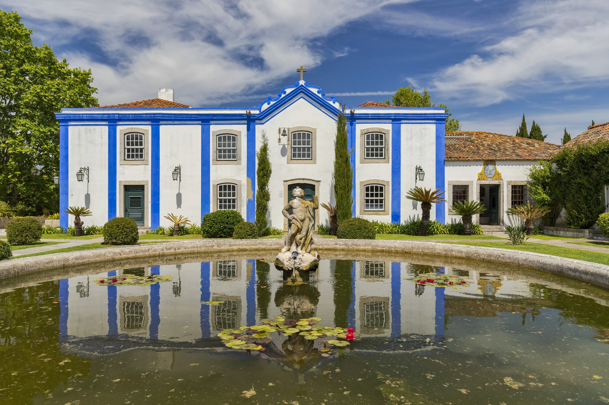
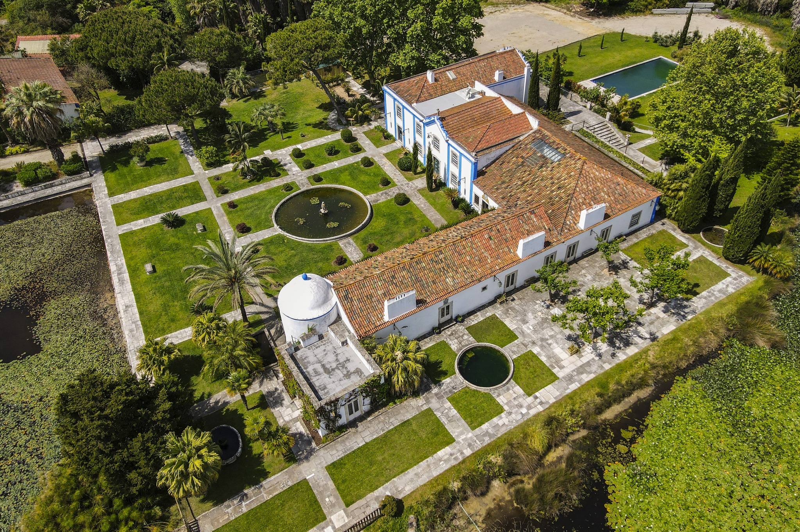
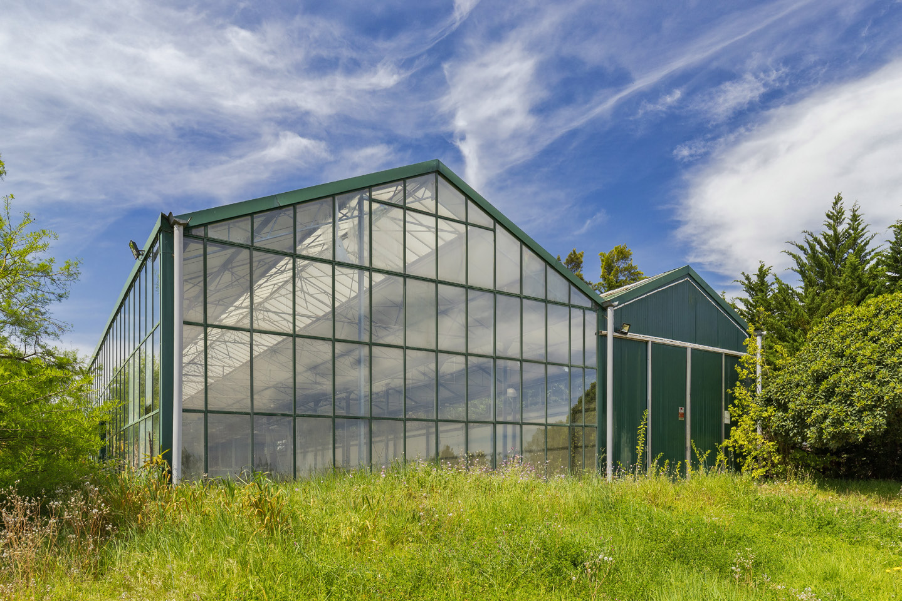
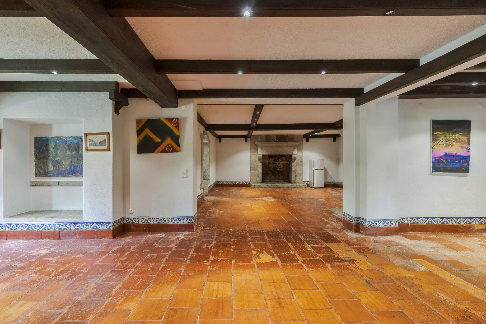

Original design
An architectural ensemble with different wings, courtyards and service structures, including a cylindrical dovecote tower.
Quinta dos Espadeiros is a 17th-century historic estate in Almada, combining an architectural ensemble, mature gardens, water features and surviving agricultural elements within the Lisbon metropolitan area.
Established in the 17th century as a recreational residence combined with agricultural production, Quinta dos Espadeiros retains the character of a historic quinta: main house, agricultural wings, gardens, water, chapel and working-memory spaces.
Presented off market. Detailed documentation and private viewing arrangements are shared with qualified parties.

Gardens · architectural ensemble
Formal gardens
Water & landscape
Historic interiors* Figures stated in the supplied property dossier and subject to confirmation during due diligence.
The south-facing main body connects to an east wing and a three-storey west wing. A landscaped courtyard with a circular pond defines the front. The estate also retains an olive-oil mill and wine cellar, including the original press beam and grape-treading vats.
An architectural ensemble with different wings, courtyards and service structures, including a cylindrical dovecote tower.
Gardens, ponds, tanks and artificial lakes create a defining landscape character, complemented by mature vegetation.
The agricultural elements preserve a tangible connection to the quinta's historic production functions.
The tall Australian trees surrounding the estate were deliberately brought and planted to form a protective green perimeter, helping screen the property from the surrounding city and traffic. The result is an unusually private and peaceful oasis within the metropolitan landscape.
That sense of separation is balanced by exceptional urban proximity: central Lisbon is approximately 12–13 km away by road, while Lisbon Airport is approximately 18 km away. Typical driving times are around 12 minutes from Cais do Sodré and around 19 minutes from the airport, depending on traffic.
A schematic view of the estate's position within the Lisbon metropolitan landscape, connecting Quinta dos Espadeiros with central Lisbon, Lisbon Airport and the two principal Tagus crossings.
Positioning uses published coordinates for Quinta dos Espadeiros, central Lisbon, Lisbon Airport and the two principal Tagus bridges; the graphic is deliberately schematic rather than a navigational map.
A private visual introduction to Quinta dos Espadeiros, showing the gardens, water and architectural character of the estate.
The estate's scale and existing character may support several future positioning concepts, including a singular private residence, boutique hospitality, wellness or private-membership use — subject to planning, licensing, heritage/municipal constraints and independent technical and financial assessment.
Request the confidential presentation or a private viewing. Your enquiry will be handled discreetly.